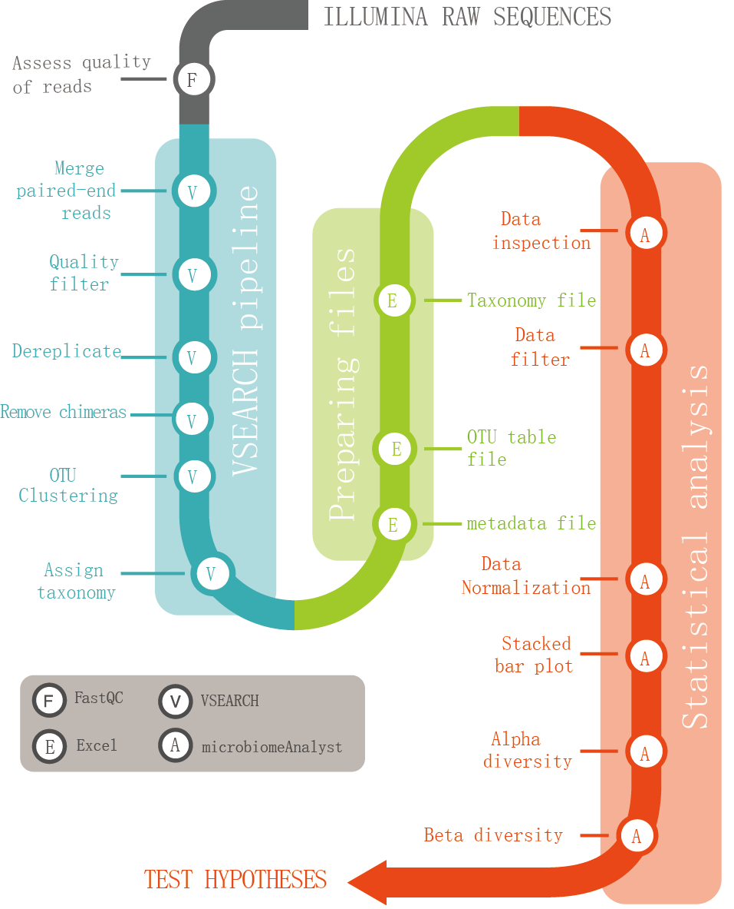

本流程相关安装软件与数据：

如果你有什么问题或建议，请跟我Email联系: 
Hao Sun, Yuxin Wang, Yifang Zhang, Zhenglong Wu, Kaiwen Zheng, Xinle Liang, Daoqiong Zheng, Pinmei Wang*, Yudong Li*. An integrated microbiome project for charactering microbial diversity in classroom based on virtual simulation experiments. PLoS ONE 2021, submitted
方梅梅, 王禹煊, 王明月, 郑和龙, 张璐, 向沙沙, 张国庆, 李余动*. Windows下16S rRNA基因扩增子测序数据分析的简易流程. 生物信息学 2018, 16 (4), 239–245. (http://swxxx.alljournals.cn/html/2018/4/20180405.html)